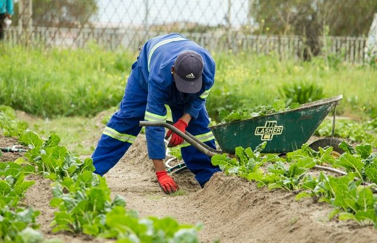

Farming productivity in Venda

The way in which the Venda kingdom's agricultural sector is now deteriorating and needs a new way forward, what I would suggest is
-
In each and every household there is at least one avocado tree or some fruit tree and perhaps a garden with a
variety of vegetables, if we were to collect each and every avocado from each and every household and pay the
household a stipend for each case of avocados we would be creating employment and would inevitably boost the
GDP, then all the produce collected would be exported or sold locally to farms markets and supermarkets
-
People with their own farms can supply local tourism sector like hotels and casinos with farm products.
-
We have agricultural graduates who need experience in things like commercial farming and other areas in the agriculture sector.
Giving them first hand experience by having educational institutions like schools, tvet college's and universities creating a partnership
with commercial, small-scale or any registred farmer with the department of agriculture working together can benefit not only the farmers
but the students as well.